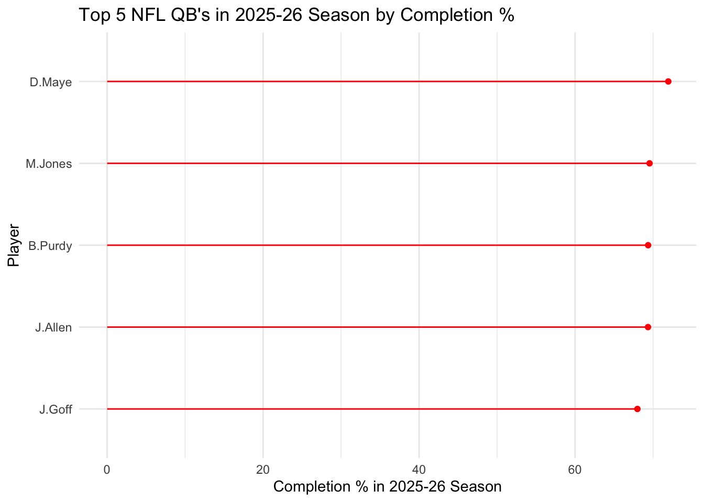

For our blog post, we are using data from the “nflverse” package on R. We want to example data for NFL Quarterbacks to try and determine who is best as some important statistics. For this post, we are going to examine total touchdowns, total yards, completion percentage (completions/attempts), and expected points added, which is a measurement of how many points a player individually contributes or takes away from their team. Our question of interest is are there any players who show up as being elite in multiple of these categories? Some other important things to note: we decided on a parameter for players to qualify for our analysis. We used the NFL’s criteria for players showing up on leaderboards; for Quarterbacks it is 14 passing attempts per scheduled game. There are 17 games in a season, and 14x17 is 238. So to qualify for our models, a player must have 238 attempts or more on the season.
library(tidyverse)
── Attaching core tidyverse packages ──────────────────────── tidyverse 2.0.0 ──
✔ dplyr 1.1.4 ✔ readr 2.1.6
✔ forcats 1.0.1 ✔ stringr 1.6.0
✔ ggplot2 4.0.1 ✔ tibble 3.3.1
✔ lubridate 1.9.4 ✔ tidyr 1.3.2
✔ purrr 1.2.1
── Conflicts ────────────────────────────────────────── tidyverse_conflicts() ──
✖ dplyr::filter() masks stats::filter()
✖ dplyr::lag() masks stats::lag()
ℹ Use the conflicted package (<http://conflicted.r-lib.org/>) to force all conflicts to become errors
# loading in player stats.nfl_stats_df =load_player_stats()# clean up stats to only show what we need for our variables. (QB's only, 2025 regular season only, etc.)nfl_stats_clean = nfl_stats_df %>%filter(position =="QB", season =="2025", season_type =="REG") %>%select(player_name, position, completions, attempts, passing_yards, passing_tds, passing_epa, rushing_yards, rushing_tds, rushing_epa, week) %>%mutate(rushing_epa = (replace_na(rushing_epa, 0)),passing_epa =replace_na(passing_epa, 0))# create our variables of interest for each game.nfl_stats_cleaner = nfl_stats_clean %>%mutate(total_yards = (passing_yards + rushing_yards),total_tds = (passing_tds + rushing_tds),total_epa = (passing_epa + rushing_epa) )
# add up stats for each player for the complete 2025-26 season stats of each variable.season_stats = nfl_stats_cleaner %>%group_by(player_name)%>%summarize(season_yds =sum(passing_yards + rushing_yards),season_tds =sum(passing_tds + rushing_tds),season_epa =sum(rushing_epa + passing_epa),total_attempts =sum(attempts),total_completions =sum(completions) ) %>%mutate(season_completion_pct = (total_completions/total_attempts)*100 )%>%# criteria to qualify as previously mentionedfilter(total_attempts >=238)
Graph 1: Scatterplot of TD’s and Yards
season_stats %>%arrange(desc(season_yds))%>%# want to narrow down candidates to t20slice(1:20) %>%ggplot(data = ., aes(x = season_yds, y = season_tds))+geom_point(aes(color = season_tds))+theme_bw()+scale_color_viridis_c()+geom_text(aes(label = player_name), check_overlap =TRUE, nudge_y =1, size =2)+labs(x ="Total Season Yards", y ="Total Season TD's", title ="2025-26 Top 20 NFL QB's in Total Yards and TD's")
This visualization shows total yards on the x axis, and total touchdowns on the y axis. While touchdowns and yards are linked, they might not always be indicative of each other depending on other variables like team personnel, coach play calling, etc. Our graph shows who is elite in terms of total touchdowns, yards, or both. One thing to keep in mind is that in this visualization, though some players in the bottom left quadrant appear to be “not elite,” in comparison to the entire NFL, they could still be considered so.
Graph 2: Completion %
# Use a lollipop plot for thiscompletion_plot = season_stats %>%arrange(desc(season_completion_pct))%>%slice(1:5) %>%mutate(player_name =fct_reorder(player_name, season_completion_pct))ggplot(data = completion_plot, aes(x = player_name, y = season_completion_pct))+geom_segment(aes(x = player_name, xend = player_name, y =0, yend = season_completion_pct),color ="red")+geom_point(aes(x = player_name, y = season_completion_pct), color ="red")+coord_flip()+theme_minimal()+labs(y ="Completion % in 2025-26 Season", x ="Player", title ="Top 5 NFL QB's in 2025-26 Season by Completion %")

This visualization shows from the 2025-26 season shows the top 5 completion % for NFL Quaterbacks. Perhaps one takeaway here is that Drake Maye has a larger difference in completion pct than 2nd-4th place, and then Jared Goff is behind that group by a couple pct points.
For this graph, we thought it would be best to look at more players than our other two visualizations. The reason for this is that EPA can be negative, which we thought would be interesting to visualize. A negative EPA means that a player’s performance actually took points off the board for their team. We used a diverging color scale to better show the difference in negative and positive EPA’s, and that some are also right around 0.
Conclusion
Based on the stats we examined, it seems like Drake Maye, Matthew Stafford, Josh Allen are all represented in some way in our visualizations. While other position types can win MVP, it is usually awarded to a QB. To accurately make a pick, we would likely need more time to analyze the players, but based on our visualizations, the 3 aforementioned players likely would be candidates.
Some possible flaws to our analysis are that there are other factors that attribute to QB success that we could not account for. These include strength of schedule, performance of teammates, coaching styles, and injury luck. If we had more time to work with this data, we may have wanted to try and create a variable that would take something like strength of schedule into account to even the playing field a little more. We believe that our use of differing geoms, color scales, and labels have yieled 3 easy to read, informative visualizations. We think that they are helpful to viewers in showing which Quarterbacks are elite at which parts of the game.